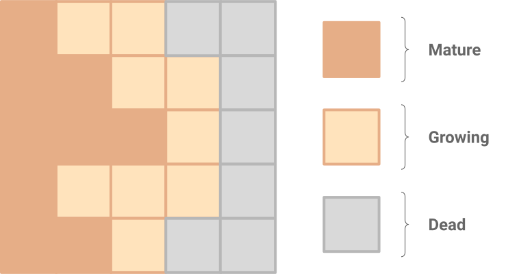

Growing models were trained to generate patterns,
but don't know how to persist them. Some patterns explode, some decay,
but some happen to be almost stable or even regenerate parts!
[experiment 1]Persistent models are trained to make the pattern stay for a prolonged
period of time. Interstingly, they often develop some regenerative
capabilities without being explicitly instructed to do so
[experiment 2].
Regenerating models were subject to pattern damages during
training, so their regenerative capabilities are much stronger,
especially in the central area. [experiment 3]
Most multicellular organisms begin their life as a single egg cell - a single cell whose progeny reliably self-assemble into highly complex anatomies with many organs and tissues in precisely the same arrangement each time. The ability to build their own bodies is probably the most fundamental skill every living creature possesses. Morphogenesis (the process of an organism’s shape development) is one of the most striking examples of a phenomenon called self-organisation. Cells, the tiny building blocks of bodies, communicate with their neighbors to decide the shape of organs and body plans, where to grow each organ, how to interconnect them, and when to eventually stop. Understanding the interplay of the emergence of complex outcomes from simple rules and homeostatic Self-regulatory feedback loops trying maintain the body in a stable state or preserve its correct overall morphology under external perturbations feedback loops is an active area of research . What is clear is that evolution has learned to exploit the laws of physics and computation to implement the highly robust morphogenetic software that runs on genome-encoded cellular hardware.
This process is extremely robust to perturbations. Even when the organism is fully developed, some species still have the capability to repair damage - a process known as regeneration. Some creatures, such as salamanders, can fully regenerate vital organs, limbs, eyes, or even parts of the brain! Morphogenesis is a surprisingly adaptive process. Sometimes even a very atypical development process can result in a viable organism - for example, when an early mammalian embryo is cut in two, each half will form a complete individual - monozygotic twins!
The biggest puzzle in this field is the question of how the cell collective knows what to build and when to stop. The sciences of genomics and stem cell biology are only part of the puzzle, as they explain the distribution of specific components in each cell, and the establishment of different types of cells. While we know of many genes that are required for the process of regeneration, we still do not know the algorithm that is sufficient for cells to know how to build or remodel complex organs to a very specific anatomical end-goal. Thus, one major lynch-pin of future work in biomedicine is the discovery of the process by which large-scale anatomy is specified within cell collectives, and how we can rewrite this information to have rational control of growth and form. It is also becoming clear that the software of life possesses numerous modules or subroutines, such as “build an eye here”, which can be activated with simple signal triggers. Discovery of such subroutines and a mapping out of the developmental logic is a new field at the intersection of developmental biology and computer science. An important next step is to try to formulate computational models of this process, both to enrich the conceptual toolkit of biologists and to help translate the discoveries of biology into better robotics and computational technology.
Imagine if we could design systems of the same plasticity and robustness as biological life: structures and machines that could grow and repair themselves. Such technology would transform the current efforts in regenerative medicine, where scientists and clinicians seek to discover the inputs or stimuli that could cause cells in the body to build structures on demand as needed. To help crack the puzzle of the morphogenetic code, and also exploit the insights of biology to create self-repairing systems in real life, we try to replicate some of the desired properties in an in silico experiment.
Model
Those in engineering disciplines and researchers often use many kinds of simulations incorporating local interaction, including systems of partial derivative equation (PDEs), particle systems, and various kinds of Cellular Automata (CA). We will focus on Cellular Automata models as a roadmap for the effort of identifying cell-level rules which give rise to complex, regenerative behavior of the collective. CAs typically consist of a grid of cells being iteratively updated, with the same set of rules being applied to each cell at every step. The new state of a cell depends only on the states of the few cells in its immediate neighborhood. Despite their apparent simplicity, CAs often demonstrate rich, interesting behaviours, and have a long history of being applied to modeling biological phenomena.
Let’s try to develop a cellular automata update rule that, starting from a single cell, will produce a predefined multicellular pattern on a 2D grid. This is our analogous toy model of organism development. To design the CA, we must specify the possible cell states, and their update function. Typical CA models represent cell states with a set of discrete values, although variants using vectors of continuous values exist. The use of continuous values has the virtue of allowing the update rule to be a differentiable function of the cell’s neighbourhood’s states. The rules that guide individual cell behavior based on the local environment are analogous to the low-level hardware specification encoded by the genome of an organism. Running our model for a set amount of steps from a starting configuration will reveal the patterning behavior that is enabled by such hardware.
So - what is so special about differentiable update rules? They will allow us to use the powerful language of loss functions to express our wishes, and the extensive existing machinery around gradient-based numerical optimization to fulfill them. The art of stacking together differentiable functions, and optimizing their parameters to perform various tasks has a long history. In recent years it has flourished under various names, such as (Deep) Neural Networks, Deep Learning or Differentiable Programming.
A single update step of the model.
Cell State
We will represent each cell state as a vector of 16 real values (see the figure above). The first three channels represent the cell color visible to us (RGB). The target pattern has color channel values in range $[0.0, 1.0]$ and an $\alpha$ equal to 1.0 for foreground pixels, and 0.0 for background.
The alpha channel ($\alpha$) has a special meaning: it demarcates living cells, those belonging to the pattern being grown. In particular, cells having $\alpha > 0.1$ and their neighbors are considered “living”. Other cells are “dead” or empty and have their state vector values explicitly set to 0.0 at each time step. Thus cells with $\alpha > 0.1$ can be thought of as “mature”, while their neighbors with $\alpha \leq 0.1$ are “growing”, and can become mature if their alpha passes the 0.1 threshold.

$\vec{state} \rightarrow 0.00$ when no neighbour with $\alpha > 0.10$
Hidden channels don’t have a predefined meaning, and it’s up to the update rule to decide what to use them for. They can be interpreted as concentrations of some chemicals, electric potentials or some other signaling mechanism that are used by cells to orchestrate the growth. In terms of our biological analogy - all our cells share the same genome (update rule) and are only differentiated by the information encoded the chemical signalling they receive, emit, and store internally (their state vectors).
Cellular Automaton rule
Now it’s time to define the update rule. Our CA runs on a regular 2D grid of 16-dimensional vectors, essentially a 3D array of shape [height, width, 16]. We want to apply the same operation to each cell, and the result of this operation can only depend on the small (3x3) neighborhood of the cell. This is heavily reminiscent of the convolution operation, one of the cornerstones of signal processing and differential programming. Convolution is a linear operation, but it can be combined with other per-cell operations to produce a complex update rule, capable of learning the desired behaviour. Our cell update rule can be split into the following phases, applied in order:
Perception. This step defines what each cell perceives of the environment surrounding it. We implement this via a 3x3 convolution with a fixed kernel. One may argue that defining this kernel is superfluous - after all we could simply have the cell learn the requisite perception kernel coefficients. Our choice of fixed operations are motivated by the fact that real life cells often rely only on chemical gradients to guide the organism development. Thus, we are using classical Sobel filters to estimate the partial derivatives of cell state channels in the $\vec{x}$ and $\vec{y}$ directions, forming a 2D gradient vector in each direction, for each state channel. We concatenate those gradients with the cells own states, forming a $16*2+16=48$ dimensional perception vector, or rather percepted vector, for each cell.
def perceive(state_grid):
sobel_x = [[-1, 0, +1],
[-2, 0, +2],
[-1, 0, +1]]
sobel_y = transpose(sobel_x)
# Convolve sobel filters with states
# in x, y and channel dimension.
grad_x = conv2d(sobel_x, state_grid)
grad_y = conv2d(sobel_y, state_grid)
# Concatenate the cell's state channels,
# the gradients of channels in x and
# the gradient of channels in y.
perception_grid = concat(
state_grid, grad_x, grad_y, axis=2)
return perception_grid
Update rule. Each cell now applies a series of operations to the perception vector, consisting of typical differentiable programming building blocks, such as 1x1-convolutions and ReLU nonlinearities, which we call the cell’s “update rule”. Recall that the update rule is learned, but every cell runs the same update rule. The network parametrizing this update rule consists of approximately 8,000 parameters. Inspired by residual neural networks, the update rule outputs an incremental update to the cell’s state, which applied to the cell before the next time step. The update rule is designed to exhibit “do-nothing” initial behaviour - implemented by initializing the weights of the final convolutional layer in the update rule with zero. We also forego applying a ReLU to the output of the last layer of the update rule as the incremental updates to the cell state must necessarily be able to both add or subtract from the state.
def update(perception_vector):
# The following pseudocode operates on
# a single cell’s perception vector.
# Our reference implementation uses 1D
# convolutions for performance reasons.
x = dense(perception_vector, output_len=128)
x = relu(x)
ds = dense(x, output_len=16, weights_init=0.0)
return ds
Stochastic cell update. Typical cellular automata update all cells simultaneously. This implies the existence of a global clock, synchronizing all cells. Relying on global synchronisation is not something one expects from a self-organising system. We relax this requirement by assuming that each cell performs an update independently, waiting for a random time interval between updates. To model this behaviour we apply a random per-cell mask to update vectors, setting all update values to zero with some predefined probability (we use 0.5 during training). This operation can be also seen as an application of per-cell dropout to update vectors.
def stochastic_update(state_grid, ds_grid):
# Zero out a random fraction of the updates.
rand_mask = cast(random(64, 64) < 0.5, float32)
ds_grid = ds_grid * rand_mask
return state_grid + ds_grid
Living cell masking. We want to model the growth process that starts with a single cell, and don’t want empty cells to participate in computations or carry any hidden state. We enforce this by explicitly setting all channels of empty cells to zeros. A cell is considered empty if there is no “mature” (alpha>0.1) cell in its 3x3 neightborhood.
def alive_masking(state_grid):
# Take the alpha channel as the measure of "life".
In our first experiment, we simply train the CA to achieve a target image after a random number of updates. This approach is quite naive and will run into issues. But the challenges it surfaces will help us refine future attempts.
We initialize the grid with zeros, except a single seed cell in the center, which will have all channels except RGB We set RGB channels of the seed to zero because we want it to be visible on the white background. set to one. Once the grid is initialized, we iteratively apply the update rule. We sample a random number of CA steps from the [64, 96] This should be a sufficient number of steps to grow the pattern of the size we work with (40x40), even considering the stochastic nature of our update rule. range for each training step, as we want the pattern to be stable across a number of iterations. At the last step we apply pixel-wise L2 loss between RGBA channels in the grid and the target pattern. This loss can be differentiably optimized We observed training instabilities, that were manifesting themselves as sudden jumps of the loss value in the later stages of the training. We managed to mitigate them by applying per-variable L2 normalization to parameter gradients. This may have the effect similar to the weight normalization . Other training parameters are available in the accompanying source code. with respect to the update rule parameters by backpropagation-through-time, the standard method of training recurrent neural networks.
Once the optimisation converges, we can run simulations to see how our learned CAs grow patterns starting from the seed cell. Let’s see what happens when we run it for longer than the number of steps used during training. The animation below shows the behaviour of a few different models, trained to generate different emoji patterns.
Many of the patterns exhibit instability for longer time periods.
We can see that different training runs can lead to models with drastically different long term behaviours. Some tend to die out, some don’t seem to know how to stop growing, but some happen to be almost stable! How can we steer the training towards producing persistent patterns all the time?
Experiment 2: What persists, exists
One way of understanding why the previous experiment was unstable is to draw a parallel to dynamical systems. We can consider every cell to be a dynamical system, with each cell sharing the same dynamics, and all cells being locally coupled amongst themselves. When we train our cell update model we are adjusting these dynamics. Our goal is to find dynamics that satisfy a number of properties. Initially, we wanted the system to evolve from the seed pattern to the target pattern - a trajectory which we achieved in Experiment 1. Now, we want to avoid the instability we observed - which in our dynamical system metaphor consists of making the target pattern an attractor.
One strategy to achieve this is letting the CA iterate for much longer time and periodically applying the loss against the target, training the system by backpropagation through these longer time intervals. Intuitively we claim that with longer time intervals and several applications of loss, the model is more likely to create an attractor for the target shape, as we iteratively mold the dynamics to return to the target pattern from wherever the system has decided to venture. However, longer time periods substantially increase the training time and more importantly, the memory requirements, given that the entire episode’s intermediate activations must be stored in memory for a backwards-pass to occur.
Instead, we propose a “sample pool” based strategy to a similar effect. We define a pool of seed states to start the iterations from, initially filled with the single black pixel seed state. We then sample a batch from this pool which we use in our training step. To prevent the equivalent of “catastrophic forgetting” we replace one sample in this batch with the original, single-pixel seed state. After concluding the training step , we replace samples in the pool that were sampled for the batch with the output states from the training step over this batch. The animation below shows a random sample of the entries in the pool every 20 training steps.
def pool_training():
# Set alpha and hidden channels to (1.0).
seed = zeros(64, 64, 16)
seed[64//2, 64//2, 3:] = 1.0
target = targets['lizard']
pool = [seed] * 1024
for i in range(training_iterations):
idxs, batch = pool.sample(32)
# Sort by loss, descending.
batch = sort_desc(batch, loss(batch))
# Replace the highest-loss sample with the seed.
batch[0] = seed
# Perform training.
outputs, loss = train(batch, target)
# Place outputs back in the pool.
pool[idxs] = outputs
A random sample of the patterns in the pool during training, sampled every 20 training steps.
Early on in the training process, the random dynamics in the system allow the model to end up in various incomplete and incorrect states. As these states are sampled from the pool, we refine the dynamics to be able to recover from such states. Finally, as the model becomes more robust at going from a seed state to the target state, the samples in the pool reflect this and are more likely to be very close to the target pattern, allowing the training to refine these almost completed patterns further.
Essentially, we use the previous final states as new starting points to force our CA to learn how to persist or even improve an already formed pattern, in addition to being able to grow it from a seed. This makes it possible to add a periodical loss for significantly longer time intervals than otherwise possible, encouraging the generation of an attractor as the target shape in our coupled system. We also noticed that reseeding the highest loss sample in the batch, instead of a random one, makes training more stable at the initial stages, as it helps to clean up the low quality states from the pool.
Here is what a typical training progress of a CA rule looks like. The cell rule learns to stabilize the pattern in parallel to refining its features.
CA behaviour at training steps 100, 500, 1000, 4000.
In addition to being able to grow their own bodies, living creatures are great at maintaining them. Not only does worn out skin get replaced with new skin, but very heavy damage to complex vital organs can be regenerated in some species. Is there a chance that some of the models we trained above have regenerative capabilities?
Patterns exhibit some regenerative properties upon being damaged, but not full re-growth.
The animation above shows three different models trained using the same settings. We let each of the models develop a pattern over 100 steps, then damage the final state in five different ways: by removing different halves of the formed pattern, and by cutting out a square from the center. Once again, we see that these models show quite different out-of-training mode behaviour. For example “the lizard” develops quite strong regenerative capabilities, without being explicitly trained for it!
Since we trained our coupled system of cells to generate an attractor towards a target shape from a single cell, it was likely that these systems, once damaged, would generalize towards non-self-destructive reactions. That’s because the systems were trained to grow, stabilize, and never entirely self-destruct. Some of these systems might naturally gravitate towards regenerative capabilities, but nothing stops them from developing different behaviors such as explosive mitoses (uncontrolled growth), unresponsiveness to damage (overstabilization), or even self destruction, especially for the more severe types of damage.
If we want our model to show more consistent and accurate regenerative capabilities, we can try to increase the basin of attraction for our target pattern - increase the space of cell configurations that naturally gravitate towards our target shape. We will do this by damaging a few pool-sampled states before each training step. The system now has to be capable of regenerating from states damaged by randomly placed erasing circles. Our hope is that this will generalize to regenerational capabilities from various types of damage.
Damaging samples in the pool encourages the learning of robust regenerative qualities. Row 1 are samples from the pool, Row 2 are their respective states after iterating the model.
The animation above shows training progress, which includes sample damage. We sample 8 states from the pool. Then we replace the highest-loss sample (top-left-most in the above) with the seed state, and damage the three lowest-loss (top-right-most) states by setting a random circular region within the pattern to zeros. The bottom row shows states after iteration from the respective top-most starting state. As in Experiment 2, the resulting states get injected back into the pool.
Patterns exposed to damage during training exhibit astounding regenerative capabilities.
As we can see from the animation above, models that were exposed to damage during training are much more robust, including to types of damage not experienced in the training process (for instance rectangular damage as above).
Experiment 4: Rotating the perceptive field
As previously described, we model the cell’s perception of its neighbouring cells by estimating the gradients of state channels in $\vec{x}$ and $\vec{y}$ using Sobel filters. A convenient analogy is that each agent has two sensors (chemosensory receptors, for instance) pointing in orthogonal directions that can sense the gradients in the concentration of certain chemicals along the axis of the sensor. What happens if we rotate those sensors? We can do this by rotating the Sobel kernels.
In a perfect world, not quantized by individual cells in a pixel-lattice, this would not be too surprising, as, after all, one would expect the perceived gradients in $\vec{x}$ and $\vec{y}$ to be invariant to the chosen angle - a simple change of frame of reference. However, it is important to note that things are not as simple in a pixel based model. Rotating pixel based graphics involves computing a mapping that’s not necessarily bijective and classically involves interpolating between pixels to achieve the desired result. This is because a single pixel, when rotated, will now likely overlap several pixels. The successful growth of patterns as above suggests a certain robustness to the underlying conditions outside of those experienced during training.
Related Work
CA and PDEs
There exists an extensive body of literature that describes the various flavours of cellular automata and PDE systems, and their applications to modelling physical, biological or even social systems. Although it would be impossible to present a just overview of this field in a few lines, we will describe some prominent examples that inspired this work. Alan Turing introduced his famous Turing patterns back in 1952 , suggesting how reaction-diffusion systems can be a valid model for chemical behaviors during morphogenesis. A particularly inspiring reaction-diffusion model that stood the test of time is the Gray-Scott model , which shows an extreme variety of behaviors controlled by just a few variables.
Ever since von Neumann introduced CAs as models for self-replication they have captivated researchers’ minds, who observed extremely complex behaviours emerging from very simple rules. Likewise, the a broader audience outside of academia were seduced by CA’s life-like behaviours thanks to Conway’s Game of Life . Perhaps motivated in part by the proof that something as simple as the Rule 110 is Turing complete, Wolfram's “A New Kind of Science” asks for a paradigm shift centered around the extensive usage of elementary computer programs such as CA as tools for understanding the world.
More recently, several researchers generalized Conway’s Game of life to work on more continuous domains. We were particularly inspired by Rafler’s SmoothLife and Chan’s Lenia , the latter of which also discovers and classifies entire species of “lifeforms”.
A number of researchers have used evolutionary algorithms to find CA rules that reproduce predefined simple patterns . For example, J. Miller proposed an experiment similar to ours, using evolutionary algorithms to design a CA rule that could build and regenerate the French flag, starting from a seed cell.
Neural Networks and Self-Organisation
The close relation between Convolutional Neural Networks and Cellular Automata has already been observed by a number of researchers . The connection is so strong it allowed us to build Neural CA models using components readily available in popular ML frameworks. Thus, using a different jargon, our Neural CA could potentially be named “Recurrent Residual Convolutional Networks with ‘per-pixel’ Dropout”.
The Neural GPU offers a computational architecture very similar to ours, but applied in the context of learning multiplication and a sorting algorithm.
Looking more broadly, we think that the concept of self-organisation is finding its way into mainstream machine learning with popularisation of Graph Neural Network models. Typically, GNNs run a repeated computation across vertices of a (possibly dynamic) graph. Vertices communicate locally through graph edges, and aggregate global information required to perform the task over multiple rounds of message exchanges, just as atoms can be thought of as communicating with each other to produce the emergent properties of a molecule , or even points of a point cloud talk to their neighbors to figure out their global shape .
Self-organization also appeared in fascinating contemporary work using more traditional dynamic graph networks, where the authors evolved Self-Assembling Agents to solve a variety of virtual tasks .
Swarm Robotics
One of the most remarkable demonstrations of the power of self-organisation is when it is applied to swarm modeling. Back in 1987, Reynolds’ Boids simulated the flocking behaviour of birds with just a tiny set of handcrafted rules. Nowadays, we can embed tiny robots with programs and test their collective behavior on physical agents, as demonstrated by work such as Mergeable Nervous Systems and Kilobots . To the best of our knowledge, programs embedded into swarm robots are currently designed by humans. We hope our work can serve as an inspiration for the field and encourage the design of collective behaviors through differentiable modeling.
Discussion
Embryogenetic Modeling
Regeneration-capable 2-headed planarian, the creature that inspired this work
This article describes a toy embryogenesis and regeneration model. This is a major direction for future work, with many applications in biology and beyond. In addition to the implications for understanding the evolution and control of regeneration, and harnessing this understanding for biomedical repair, there is the field of bioengineering. As the field transitions from synthetic biology of single cell collectives to a true synthetic morphology of novel living machines , it will be essential to develop strategies for programming system-level capabilities, such as anatomical homeostasis (regenerative repair). It has long been known that regenerative organisms can restore a specific anatomical pattern; however, more recently it’s been found that the target morphology is not hard coded by the DNA, but is maintained by a physiological circuit that stores a setpoint for this anatomical homeostasis . Techniques are now available for re-writing this setpoint, resulting for example in 2-headed flatworms that, when cut into pieces in plain water (with no more manipulations) result in subsequent generations of 2-headed regenerated worms (as shown above). It is essential to begin to develop models of the computational processes that store the system-level target state for swarm behavior , so that efficient strategies can be developed for rationally editing this information structure, resulting in desired large-scale outcomes (thus defeating the inverse problem that holds back regenerative medicine and many other advances).
Engineering and machine learning
The models described in this article run on the powerful GPU of a modern computer or a smartphone. Yet, let’s speculate about what a “more physical” implementation of such a system could look like. We can imagine it as a grid of tiny independent computers, simulating individual cells. Each of those computers would require approximately 10Kb of ROM to store the “cell genome”: neural network weights and the control code, and about 256 bytes of RAM for the cell state and intermediate activations. The cells must be able to communicate their 16-value state vectors to neighbors. Each cell would also require an RGB-diode to display the color of the pixel it represents. A single cell update would require about 10k multiply-add operations and does not have to be synchronised across the grid. We propose that cells might wait for random time intervals between updates. The system described above is uniform and decentralised. Yet, our method provides a way to program it to reach the predefined global state, and recover this state in case of multi-element failures and restarts. We therefore conjecture this kind of modeling may be used for designing reliable, self-organising agents. On the more theoretical machine learning front, we show an instance of a decentralized model able to accomplish remarkably complex tasks. We believe this direction to be opposite to the more traditional global modeling used in the majority of contemporary work in the deep learning field, and we hope this work to be an inspiration to explore more decentralized learning modeling.
Acknowledgments
We would like to thank Blaise Aguera y Arcas for his support, as well as for teasing our work in his excellent 2019 talk at NeurIPS . We also thank Jyrki Alakuijala for his continuous support. We thank Damien Henry, Mark Sandler, Sean Silva and Bert Chan for their review of our early drafts, and Andrew Jackson for proofreading the text.
On the Distill side, we are especially grateful to Chris Olah for reviewing the article draft, insightful comments on text and diagrams, and general support of the publication.
Author Contributions
Research: Alexander came up with the Self-Organising Asynchronous Neural Cellular Automata model and Ettore contributed to its design. Ettore designed and performed most of the experiments for this work. Alexander supervised the entire process and contributed extensively to the later stages of development by performing experiments and refining the model.
The idea of applying neural networks to understanding regeneration, and to designing self-organising systems, was proposed by Michael Levin in his email to Alexander, that was sent following the DeepDream publication by Alexander in 2015. Alexander’s proposal of this model and this work were inspired by the talk given by Michael at NeurIPS 2018 as well as the subsequent email exchange between Alexander and Michael.
Demos: Alexander created both the WebGL and the tf.js demo. Ettore contributed to the tf.js demo.
Writing & Diagrams: Alexander outlined the structure of the article, and contributed to the content throughout. Ettore contributed to the content throughout. Eyvind drew all the diagrams, contributed to the content throughout, and wrote all of the pseudocode. Michael made extensive contributions to the article text, providing the biological context and motivation for this work.
Implementation details
WebGL playground. Starting from our first experiments on Neural CA growth and regeneration, we wanted to challenge our models with new situations not seen during training, like removing large portions of the pattern, or seeding multiple instances side-by-side. To facilitate exploration and sharing of our models, we created a TensorFlow.js playground that allowed us to interact with trained models right in a browser. The code for exporting and loading CA models in TF.js format is available in the accompanying Colab notebook.
While writing this article, we decided to see how far one can push the performance and portability of this interactive playground. We reimplemented all necessary operations from scratch using the WebGL API and GLSL shader language. This implementation powers the demo that can be found on the top of this page. We decided to quantize all model parameters and activations We noticed that our models are more sensitive to the accuracy of small magnitude activation values, rather than the large ones. That’s why we use the non-linear $\arctan$ function to compress the unbounded activation values to the bounded segment, preserving the highest accuracy around zero. to 8-bit values, in order to maximize the performance and compatibility with mobile hardware.
The quantization was largely an afterthought, and was not accounted for during training. That’s why there are slight differences in models’ behaviours between the online demo and the Python version. However, most of the CAs that we’ve trained managed to survive the somewhat draconic quantization without severe artifacts, although in a few cases we had to resort to selecting the best model checkpoint between a few training runs.
Colaboratory Notebook. All of the experiments, images and videos in this article can be recreated using the single notebook referenced at the beginning of the article. Images have a “Recreate in Colab” button which brings you to the corresponding cell that generated the image. Our reference implementation of the Neural CA was written while striving to be as concise and simple as possible and thus foregoes many performance optimizations and tricks one could implement. For the core of the CA - the neural network parametrizing the update rule - the full code is contained in the tf.keras.Model NeuralCA class. Note that this network consists of just 8.3K parameters - minute by most standards and we suspect it could be minimized further employing pruning or other forms of compression. The update loop consists of a native python loop iteratively applying the aforementioned update function, and making use of various techniques we’ve described in the article, such as having a sample pool and applying damage to the starting seeds. The rest of the notebook consists of code to generate and visualize the various images and videos employed in this article, utilizing models pre-trained by us using this very same colab. These pre-trained models can be easily recreated in a matter of minutes with a current generation GPU or one provided for free in Colab.